Histoire et société
57 fiches en français sur le thème « Histoire et société », prêtes à imprimer et avec corrigé.
57 ressources
Niveau

Guerre de Trente Ans – Fiche : texte à trous, compréhension orale et mots mêlés

Guerres médiques – Texte à trous, compréhension orale et mots mêlés

Guerre russo-ukrainienne – Texte à trous, compréhension orale et mots mêlés

Guerre de Trente Ans – Texte à trous, compréhension orale et mots mêlés

Guerre de Sécession – Texte à trous, compréhension orale et mots mêlés

Guerre de Sept Ans – Texte à trous, compréhension orale et mots mêlés

Guerre d'indépendance des États-Unis – Lecture, écoute et mots mêlés (FLS/FLE)

Guerre civile – Compréhension de lecture : texte à trous, écoute et mots mêlés
Seconde Guerre mondiale – Fiche : texte à trous, compréhension orale et mots mêlés
Révolution industrielle – Fiche : texte à trous, compréhension orale et mots mêlés
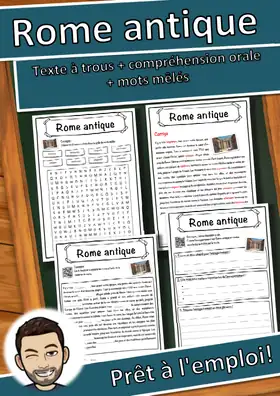
Rome antique – Fiche : texte à trous, compréhension orale et mots mêlés
Première Guerre mondiale – Fiche : texte à trous, compréhension orale et mots mêlés
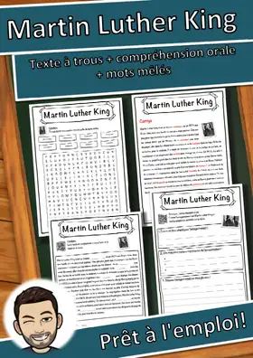
Martin Luther King – Fiche : texte à trous, compréhension orale et mots mêlés
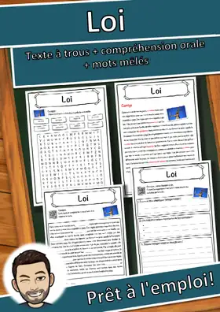
Loi – Fiche : texte à trous, compréhension orale et mots mêlés
Guerre civile – Fiche : texte à trous, compréhension orale et mots mêlés
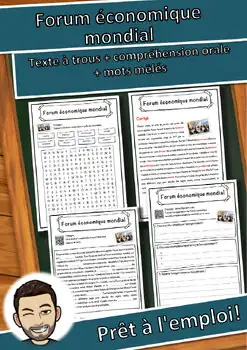
Forum économique mondial – Texte à trous, compréhension orale et mots mêlés
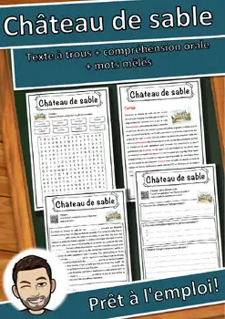
Château de sable – Texte à trous, compréhension orale et mots mêlés
Empire colonial français – Texte à trous, compréhension orale et mots mêlés
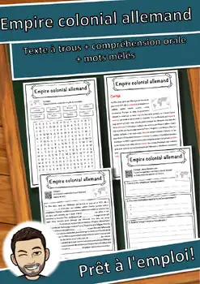
Empire colonial allemand – Texte à trous, compréhension orale et mots mêlés
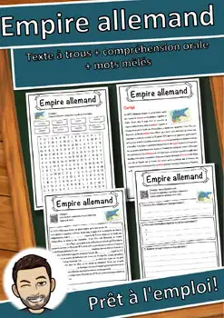
Empire allemand – Compréhension de lecture : texte à trous, écoute et mots mêlés
Forum économique mondial – Fiche : texte à trous, compréhension orale et mots mêlés
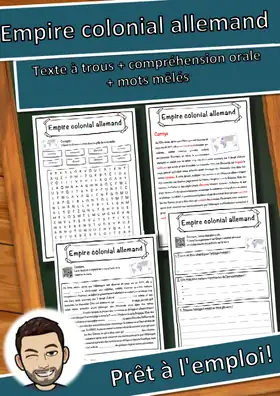
Empire colonial allemand – Fiche : texte à trous, compréhension orale et mots mêlés
Château de Versailles – Fiche : texte à trous, compréhension orale et mots mêlés
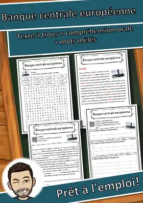
Banque centrale européenne – Fiche : texte à trous, compréhension orale et mots mêlés
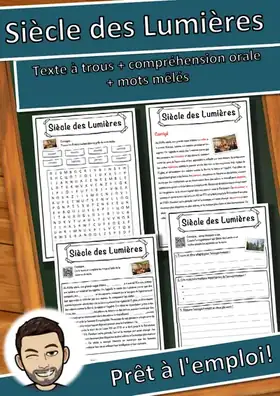
Siècle des Lumières – Fiche : texte à trous, compréhension orale et mots mêlés
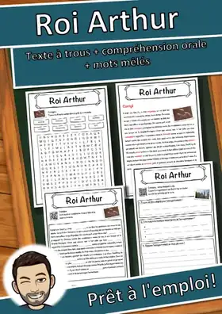
Roi Arthur – Fiche : texte à trous, compréhension orale et mots mêlés
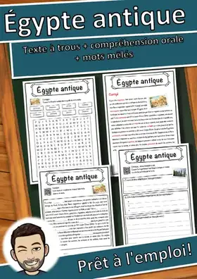
Égypte antique – Fiche : texte à trous, compréhension orale et mots mêlés
Château de Schönbrunn – Fiche : texte à trous, compréhension orale et mots mêlés
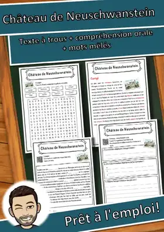
Château de Neuschwanstein – Fiche : texte à trous, compréhension orale et mots mêlés
Première révolution anglaise – Fiche : texte à trous, compréhension orale et mots mêlés
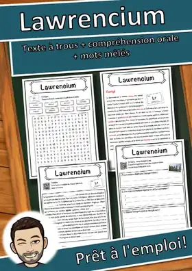
Lawrencium – Fiche : texte à trous, compréhension orale et mots mêlés
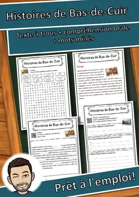
Histoires de Bas-de-Cuir – Fiche : texte à trous, compréhension orale et mots mêlés
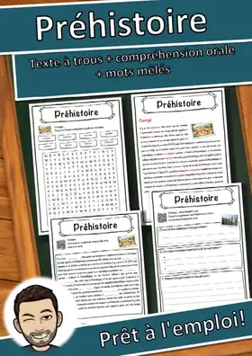
Préhistoire – Fiche : texte à trous, compréhension orale et mots mêlés
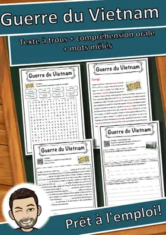
Guerre du Vietnam – Fiche : texte à trous, compréhension orale et mots mêlés
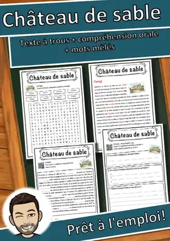
Château de sable – Fiche : texte à trous, compréhension orale et mots mêlés
Guerre d'indépendance des États-Unis – Fiche : texte à trous, compréhension orale et mots mêlés
Guerre de Sécession – Fiche : texte à trous, compréhension orale et mots mêlés
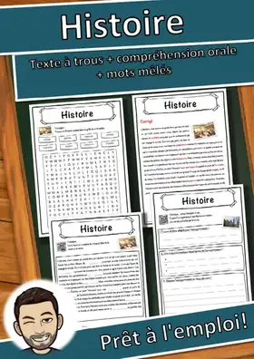
Histoire – Fiche : texte à trous, compréhension orale et mots mêlés
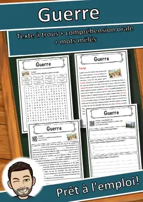
Guerre – Fiche : texte à trous, compréhension orale et mots mêlés
Siècle – Fiche : texte à trous, compréhension orale et mots mêlés
Antigua-et-Barbuda – Fiche : texte à trous, compréhension orale et mots mêlés
Loi fondamentale de la République fédérale d'Allemagne – Fiche : texte à trous, compréhension orale et mots mêlés
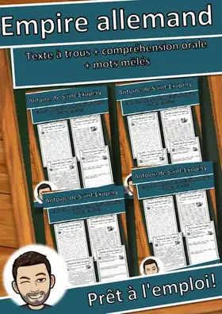
Empire allemand – Fiche : texte à trous, compréhension orale et mots mêlés
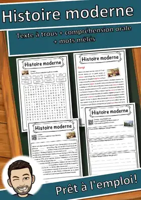
Histoire moderne – Fiche : texte à trous, compréhension orale et mots mêlés
Empire colonial français – Fiche : texte à trous, compréhension orale et mots mêlés
Révolution russe – Fiche : texte à trous, compréhension orale et mots mêlés
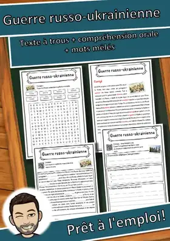
Guerre russo-ukrainienne – Fiche : texte à trous, compréhension orale et mots mêlés
Révolution française – Fiche : texte à trous, compréhension orale et mots mêlés
Aucune ressource trouvée – essaie un autre mot ou un autre filtre.